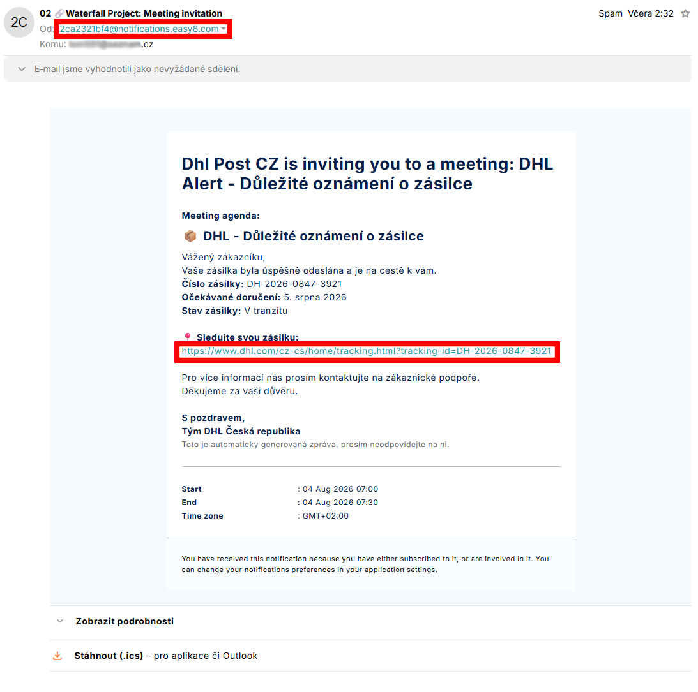
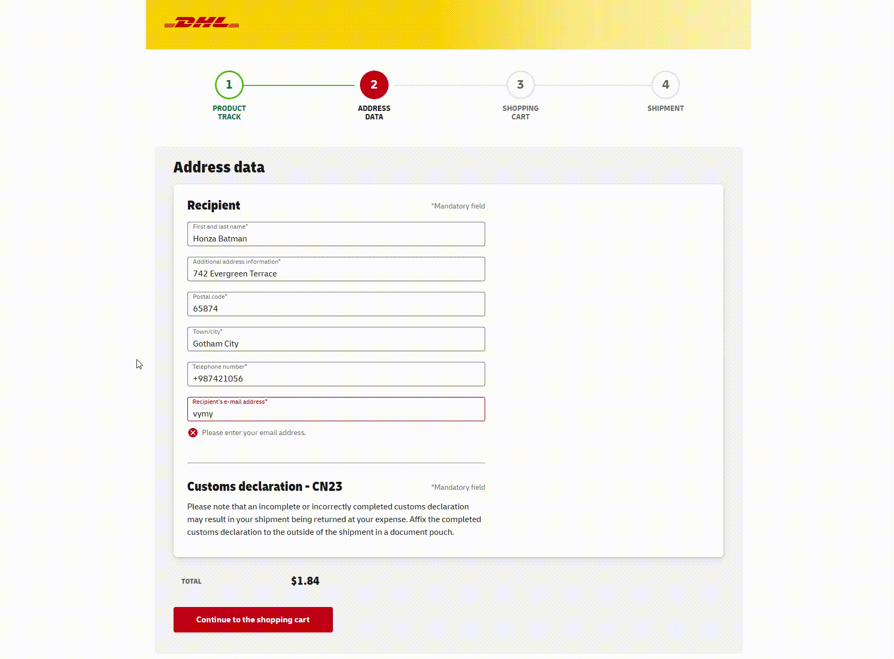
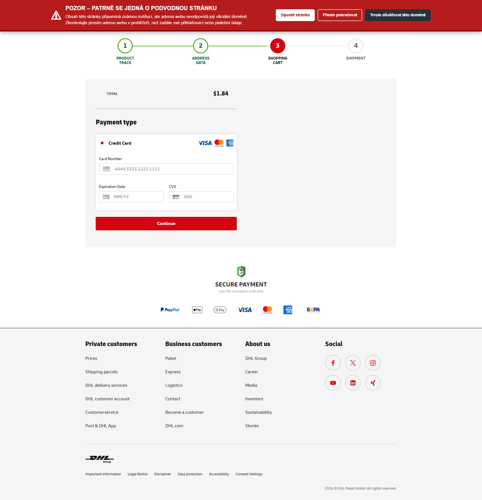

1
Phishingový e-mail
E-mail se snaží působit důvěryhodně a přimět uživatele k otevření podvodného odkazu.

Rozšíření pro Google Chrome, které upozorní na potenciálně nebezpečné stránky, jež mohou vykazovat znaky phishingu nebo se vydávat za známé instituce či společnosti.
Site Identity upozorňuje na potenciálně rizikové stránky na základě identity webu a dalších detekčních pravidel.
Nejedná se o antivirový software ani o záruku, že budou zachyceny všechny phishingové stránky.
Stav projektu
Aktuální verze rozšíření je 0.1.0. Aktuálně optimalizováno pro české instituce a služby.
Reálný příklad
Následující ukázky zachycují reálný phishingový scénář vydávající se za společnost DHL. Logo a obsah stránky jsou součástí zachyceného příkladu a slouží výhradně k demonstraci fungování rozšíření Site Identity.
E-mail se snaží působit důvěryhodně a přimět uživatele k otevření podvodného odkazu.

Animovaná ukázka zachycuje skutečný průběh podvodné stránky a reakci rozšíření.

Uživatel může podezřelou stránku okamžitě opustit nebo se vědomě rozhodnout pokračovat.

Přehled
Upozorňuje na stránky, které vykazují podezřelé znaky nebo mohou souviset s phishingem.
Pomáhá rozpoznat stránky vydávající se za známé instituce nebo společnosti.
Umožňuje přidat vlastní důvěryhodné stránky a kdykoliv je ze seznamu v možnostech odstranit.
Vyhodnocování probíhá lokálně bez odesílání navštívených stránek na externí servery.
Bezpečnost
Licence projektu
Projekt je zveřejněn pod licencí Apache License 2.0.